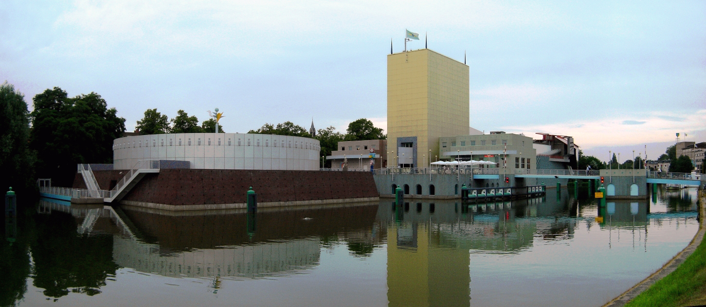

welkom bij de Partij van groningen
PVGR is een samenwerkingsverband tussen een aantal lokale politieke partijen in Groningen. Die partijen zijn alle lid van gemeenteraden van diverse gemeenten binnen onze mooie provinice.
De provincie is een middenbestuur, tussen Rijksoverheid en lokale overheid in. Wij vinden dat de provincie zich niet moet gedragen als een verlengstuk van het Rijk, maar als een verlengstuk van de gemeenten.
De provincie moet in Den Haag en Brussel lobbyen voor de gemeenten om daar ruimte te vinden in regelgeving en/of in financiën om plannen van de gemeenten mogelijk te maken. Dit betekent dat de provincie zich niet overheersend richting gemeenten moet opstellen maar juist als partner!
Samen met de provincie Groningen gaan wij voor een sterker Groningen!
Glasvezel is een noodzakelijke voorziening voor een aantrekkelijk vestigingsklimaat, ontwikkelingen in de zorg om langer thuis te kunnen blijven wonen en noodzakelijk in het huidige digitale tijdperk.
Om werkgelegenheid te creëren is het belangrijkheid om concurrerend te zijn met andere regio’s.